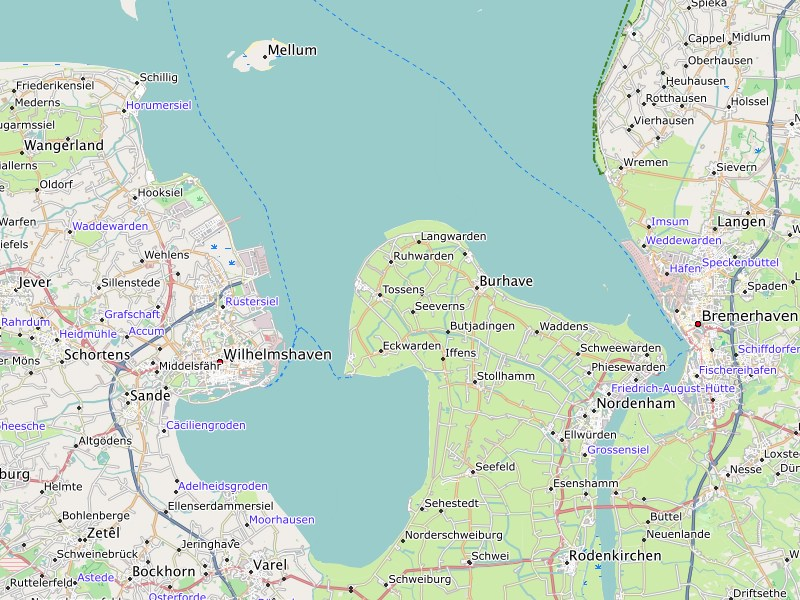

Basisdaten:
Die Freizeitkarten (Ausgabe 19.06) basieren auf den OpenStreetMap-Daten vom 22.06.2019.
Vielen Dank an alle Mapper die Daten hierzu beigetragen haben.
Ergänzungen / Veränderungen in der Ausgabe 19.06:
- allgemeine Verbesserung der Kartendaten (durch das OSM-Projekt)
Hinweis:
Für Benützer von Microsoft Windows und BaseCamp empfehlen wir die neuen GMAP Installer zu verwenden. Der Grund dafür ist, dass der frühere Windows Installer in BaseCamp keine Höhenprofile
anzeigt. Genaueres zur Installation mit GMAP Installer kann auf der Installationsseite nachgelesen werden.
Nächste Ausgabe:
Die nächste Ausgabe der Freizeitkarten erscheint voraussichtlich September 2019.

Der Jadebusen hat mit 3,7 Metern den höchsten Tidenhub an der deutschen Küste.
Aktuelle Karten:
Die aktuellen Karten sollten über die jeweiligen Länder / Regionen heruntergeladen werden. Die Links dazu (z.B. Deutschland, Österreich, Schweiz, ...) finden sich in der Menüleiste. Erfahrene Benutzer können auch diesen Link auf das Kartenverzeichnis verwenden.
Ältere Karten:
Ältere Karten stehen unter diesem Link auf das Archiv noch einige Zeit zur Verfügung.
Support-Forum:
Im Geoclub gibt es ein Support-Forum zu den Freizeitkarten, wo viele Kartennutzer und auch die Kartenbauer Hilfestellungen geben: Freizeitkarte Support-Forum